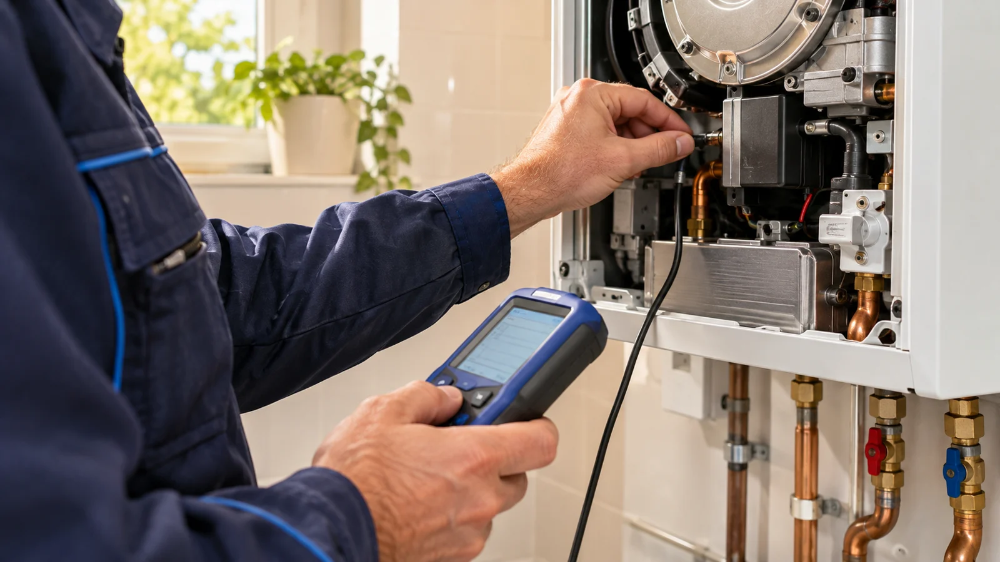
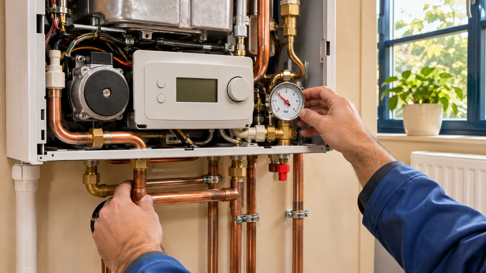

Organiser l’entretien de votre chaudière
Nous assurons l’entretien de chaudière à Pineuilh. Indiquez au secrétariat l’énergie utilisée, la marque et la référence de l’appareil pour préparer votre rendez-vous.
Nous assurons l’entretien et la maintenance des chaudières, ainsi que le suivi des demandes de dépannage.


Nous assurons l’entretien de chaudière à Pineuilh. Indiquez au secrétariat l’énergie utilisée, la marque et la référence de l’appareil pour préparer votre rendez-vous.
Notre activité de maintenance chauffage concerne les chaudières au fioul, au gaz, au bois et aux granulés, ainsi que les pompes à chaleur. L’entretien de climatisation est présenté sur sa page dédiée.
Votre chauffage présente un dysfonctionnement ? Décrivez les signes observés et le message affiché, s’il y en a un. Le bureau reçoit les demandes de dépannage ; le mobile est réservé aux urgences pendant les heures d’ouverture.
Contactez-nous pour connaître le tarif actuel et les frais de déplacement applicables à votre commune. Les anciens montants datés de 2025 ne sont pas présentés comme des prix actuels.